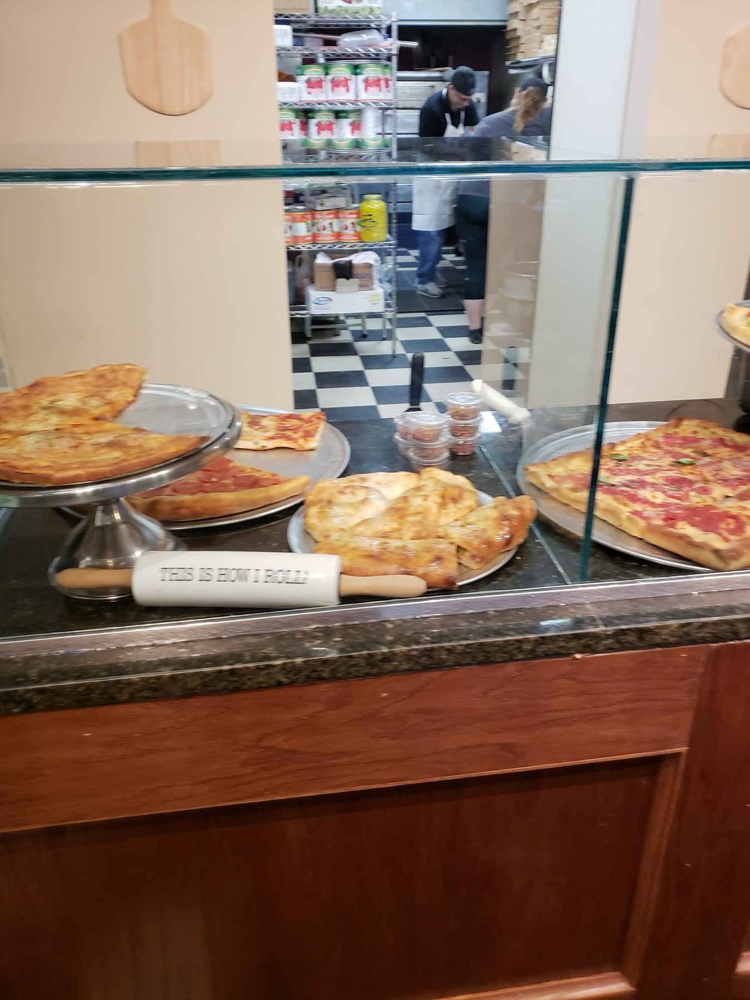
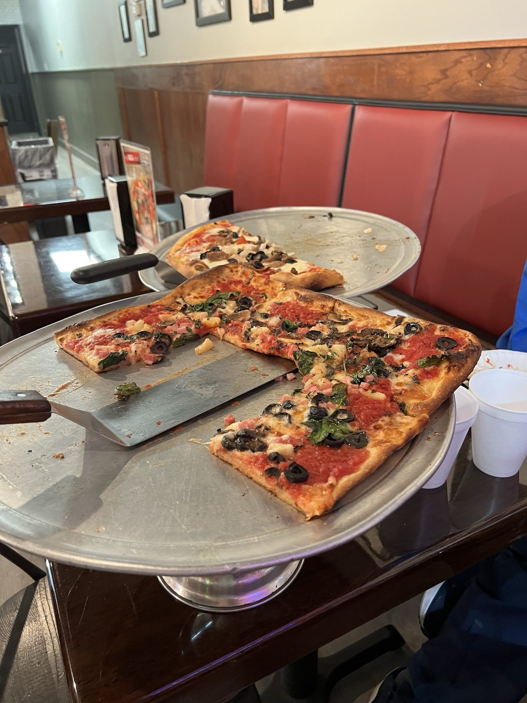
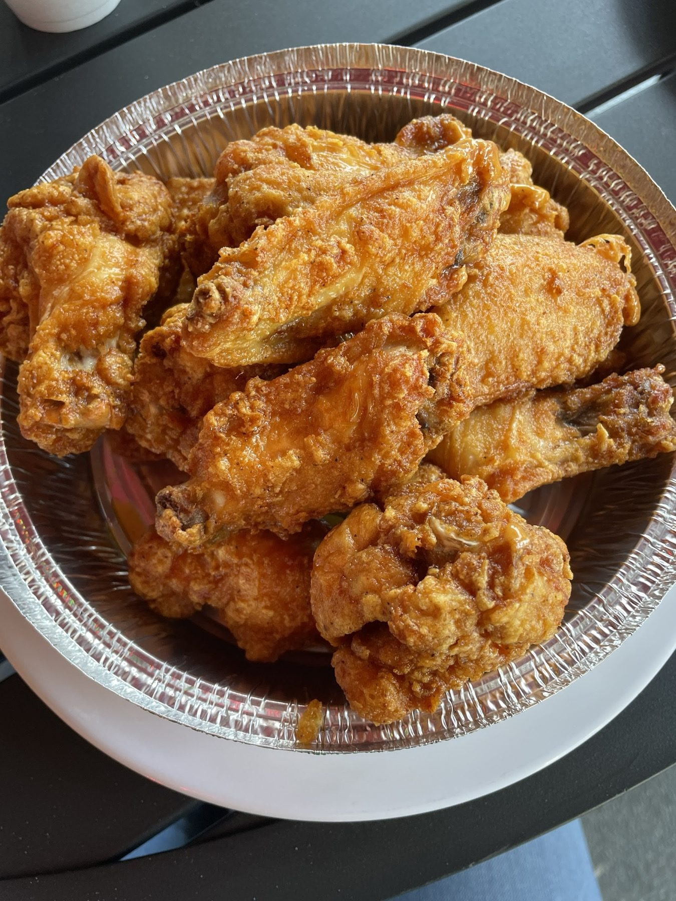

Pies and slices
Thin crust New York pies, plus white pizza and Grandma's. Grab a slice at the counter.
Fratelli's · Zephyrhills
Fratelli's Pizza and Cafe serves Zephyrhills from Wesley Chapel.
Coming from Zephyrhills? Fratelli's Pizza and Cafe is in Wesley Chapel, at Bruce B. Downs and SR-54. New York-style pizza, pasta and hot subs.
What we make
Where to start.

Thin crust New York pies, plus white pizza and Grandma's. Grab a slice at the counter.

Square, thick crust Sicilian pizza, whole or by the slice.

Wings in mild, medium, hot, BBQ, blackened, sweet chili or New York style. Garlic knots and fries too.
4.5 ★ · 458 Google reviews
GUEST CHECK№ 1Delicious authentic NY style pies from Brooklyn to the WC! No gimmicks, just awesome eats!
GUEST CHECK№ 2Went to Fratelli’s Pizza and Cafe today, and it did not disappoint! This is a true old-school pizzeria. The pizza came out perfectly cooked with a crispy crust that was outstanding, and the cannolis were delicious as well. If you're looking for a great slice of pizza in the area, definitely give them a try. Highly recommended! 🍕🇮🇹
GUEST CHECK№ 3It was a “no you pick day” between my husband and I. & BOYYYY did he deliver with this place. PASTA ALA VODKA 11/10 best I’ve had - EVER( especially in Wesley chapel). Pizza wasn’t greasy had the perfect amount of sauce and cheese ratio. Caesar salad w/ homemade dressing and garlic knots also hit the spot. New spot when we crave pizza and pasta 🔥🔥
GUEST CHECK№ 4NY style pizza was PERFECT! Pasta Carbonara was delicious, rarely could find this style around town. No frills here; old NY italain decor-over the counter order / plastic, bottled beverage. It was a nice quiet dining (date night) with great food. I and Mrs. Enjoyed and willing to comeback.